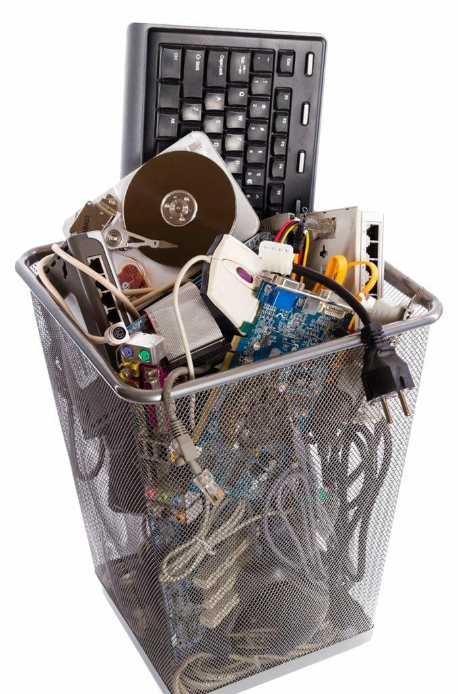

What We Do
Reducing Electronic Waste for a Cleaner Future
Teaching communities how to responsibly recycle old tech, extend device lifespans, and protect our environment from toxic waste.
See What We Have To Offer
E-waste is growing at an alarming rate because many people don't know how smartphones affect our planet. Old phones are thrown into the trash, releasing harmful materials into the environment instead of being recycled safely.

Our Platform Roadmap
How It Works?
Step By Step
Track Your Impact
Use our interactive calculator to see the carbon footprint and environmental cost of your current smartphone habits.
Discover Eco-Habits
Learn simple ways to extend your phone's life, find local repair guides, and understand the cycle of electronics.
Recycle & Reward
Locate the nearest certified e-waste recycling center to safely drop off your old devices and earn green rewards.
The Cost of Burning Tech
When smartphones end up in landfills or open burn pits, they don't just sit there—they poison our surroundings.
See What We Have To Offer
Technology evolves fast, but our planet shouldn't have to pay the price. We provide the tools, data, and certified networks needed to transform how your community handles aging electronics. From maximizing the lifespan of your current devices to ensuring retired tech is securely and responsibly recycled, we offer seamless solutions that turn the e-waste crisis into an opportunity for sustainable innovation.
Our Platform Roadmap
How It Works?
Step By Step
Safe Deactivation
The smartphone is turned off completely, and the lithium-ion battery is carefully removed first to prevent short circuits or fires during handling.
Components Sorting
Workers dismantle the phone casing to separate screens, circuit boards, plastics, and camera modules, grouping them cleanly by material type.
Metals Recovery
The isolated circuit boards are sent for specialized processing to safely extract valuable raw materials like gold, copper, and silver.
The Power of Manual Dismantling
Shifting from raw destruction to careful, hand-separated e-waste management protects both our resources and our planet.
See What We Have To Offer
Yangon’s green future relies on modernizing how we handle technology. We offer an advanced blueprint for urban waste management, replacing outdated, manual scrap-sorting with high-efficiency automation. By integrating precision industrial shredding, magnetic separation, and mechanical material recovery, we provide the technology required to clean up our local environment, protect municipal landfills, and extract the hidden value inside every discarded smartphone.
Our Platform Roadmap
How It Works?
Step By Step
Mechanical Shredding
Stripped smartphone chassis are fed into heavy industrial shredders that use high-torque rotating blades to crush the tech into uniform, coin-sized pieces.
Magnetic Separation
The shredded mixed streams pass under powerful overhead magnets and eddy-current separators to instantly isolate iron, steel, and aluminum from plastics.
Advanced Recovery
The remaining circuit board fragments undergo automated air classification and optical sorting to group high-value gold and copper particles together.
The Power of Shredding & Recovery
When smartphones end up in landfills or open burn pits, they don't just sit there—they poison our surroundings.
Welcome
Get in Touch
with Novix
Have questions about smartphone recycling? Want to bring our interactive sustainability platform to your school or local community? Send us a message and our team will get back to you within 24 hours.